ChronoCraft
Guide
This guide explains how to use ChronoCraft (the iPhone app and the Apple Watch app). Button and screen names are shown in quotation marks, exactly as they appear in the app.
Get the app free on the App Store.
1. Getting started
What you can do
- Choose the shape, material, and finish of the case, bezel, dial, hands, crystal, strap, movement, rotor, and case back, and assemble them in 3D.
- Take the watch apart into layers in "See the structure", and watch the balance and escapement move, with the movement's ticking, in "See it in motion".
- Your designs are saved automatically in "My Designs" and sync through iCloud between devices that use the same Apple Account.
- Show a design in the Apple Watch app, and use it as a complication or on the Photos face.
Your first minute (start from an example)
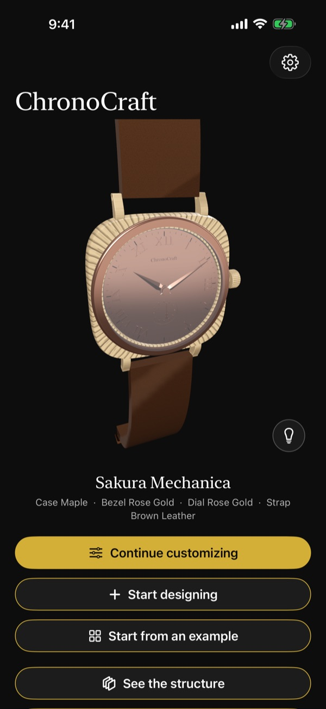
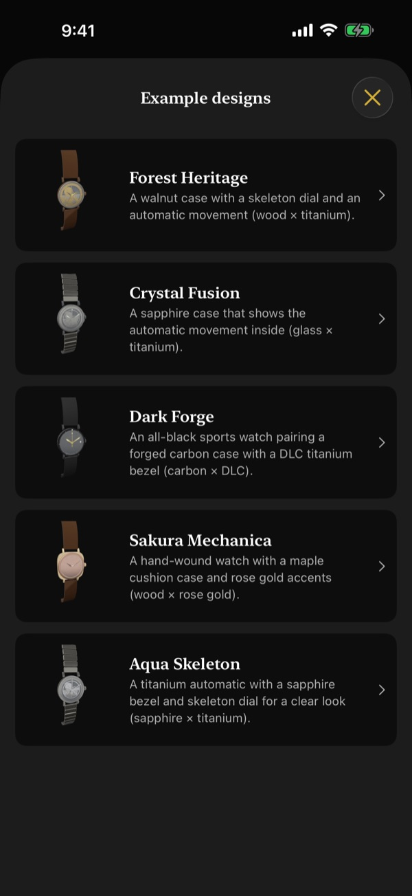
- On the home screen, tap "Start from an example" below the watch.
- Tap a design in "Example designs" (Figure 2). This takes you to the parts screen ("Parts").
- Choose a part with the tabs below the 3D watch, and try another "Material" in the grid below the tabs. The 3D watch changes right away.
- Changes are saved automatically. The design takes the example's name, which you can change later.
To start from scratch, tap "Start designing" on the home screen. Choose a movement in "Choose base" and tap "Next" to go to "Parts". The design is named "New Design". To pick up where you left off, tap the gold "Continue customizing" button on the home screen.
Home screen buttons
Scroll up on the home screen to see the buttons for the design you're editing (Figure 3): "See the structure", "See it in motion", "Rename", "My Designs", "Share", "Show on Apple Watch", and "Save for Photos Face". Each one is explained later in this guide.
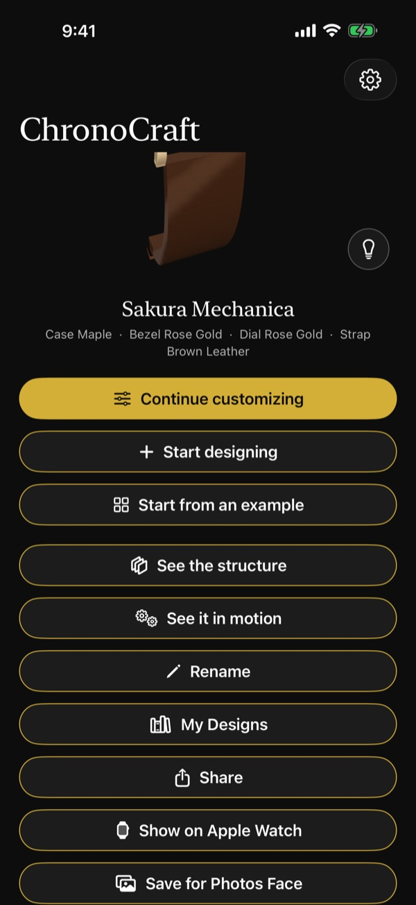
Moving the 3D watch
- Drag to rotate, and pinch to zoom in or out.
- Double-tap to return to the front view.
- On the home screen, "Parts", and "Details", the watch slowly turns by itself when you leave it alone for a moment.
2. iPhone: Designing
Choosing a part (tabs)
The "Parts" screen shows the 3D watch at the top, the part tabs below it, and a grid of choices below the tabs (Figure 4). The tabs are "Case", "Bezel", "Dial", "Hands", "Crystal", "Strap", "Movement", "Rotor", and "Case back"; scroll them sideways to see the rest. "Rotor" appears only for automatic movements. When you switch tabs, the watch turns to show that part clearly.
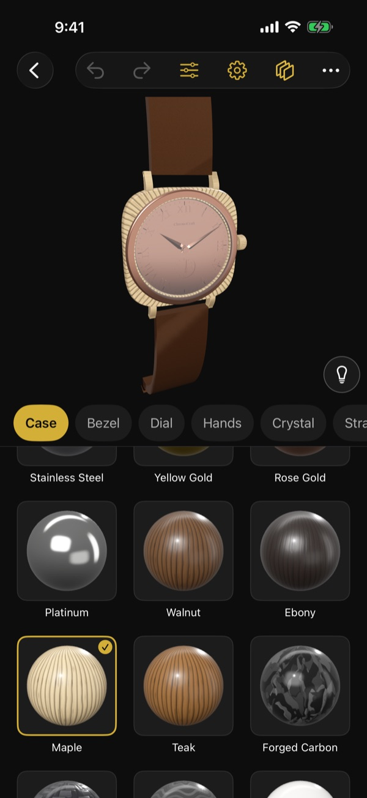
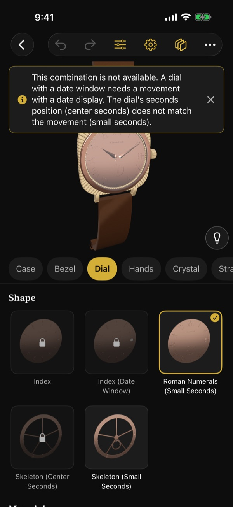
The toolbar at the top
At the top of "Parts" is the back button, followed by a toolbar with these buttons (Figure 4):
- Two curved arrows: "Undo" and "Redo".
- Three slider lines: "Details".
- Gear: "Choose base" (change the movement).
- Stacked layers: "See the structure".
- "…": buttons that don't fit in the toolbar. Tap it to choose "See it in motion", "Rename", "My Designs", "Share", "Show on Apple Watch", "Save for Photos Face", and so on. (How many buttons fit directly in the toolbar depends on the screen width.)
Shape, material, and finish
- "Shape": choose the shape of the part (the "Shape" grid in Figure 5).
- "Material": choose from the materials available for that shape. Picking a shape or material gives a short sound and haptic that match the material.
- "Finish": appears only for materials that take a finish, such as metals. Choose "Polished", "Brushed", or "Sandblasted".
Combinations you can't choose
Shapes, materials, and finishes that aren't available for the current design are dimmed and show a lock. Tap one to see why in the banner at the top of the screen (Figure 5; your design doesn't change). When other parts are adjusted automatically to fit your choice, the banner tells you that too. The banner disappears after a few seconds; tap the × on the right of the banner to close it right away.
Undo and redo
Use the curved arrow buttons in the toolbar (left for "Undo", right for "Redo") to undo or redo your last change. "Details" has the same arrows at the top right.
Changing the movement (Choose base)
Open it with the gear button in the toolbar of "Parts" ("Choose base").
- Under "Winding type", choose "Manual winding" or "Automatic".
- Pick one card under "Movement". Each card shows the seconds hand position ("Center seconds" or "Small seconds"), "Date" or "No date", and the diameter.
- Tap "Next".
Movements that don't fit the current design say "Not available for this design (tap to see why)". The "?" buttons next to the headings explain manual and automatic winding and the seconds hand positions.
Details
Open it with the three-slider-lines button in the toolbar of "Parts" ("Details"). The 3D watch is at the top and the settings are below it. You can change:
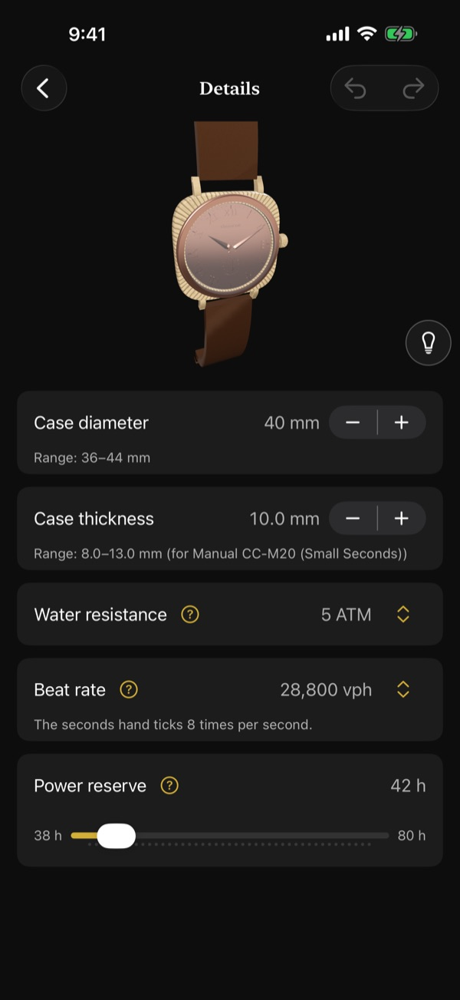
- "Case diameter" and "Case thickness": change them with the + and − on the right. The "Range" is shown below each item. The thickness range depends on the movement you've chosen.
- "Water resistance" and "Beat rate": tap the value on the right (with the up and down arrows) and choose from a list. Changing the beat rate also changes how the seconds hand ticks and the speed of the movement sound. How many times the seconds hand ticks per second is shown below the item.
- "Power reserve": change it with the slider. The shortest and longest times you can choose are shown at the ends of the slider.
Tap the gold "?" button next to an item to read what it means.
Other toolbar buttons
You can also open "See the structure", "See it in motion", "Rename", "My Designs", "Share", "Show on Apple Watch", and "Save for Photos Face" from the toolbar of "Parts" (buttons that don't fit are under "…"). The same actions are available from the buttons on the home screen.
3. iPhone: See the structure
Open it with "See the structure" on the home screen or the stacked-layers button in the toolbar of "Parts". The 3D watch is at the top, the "Explode" slider below it, and below that "Assemble", "Skeleton", and the "Layers" list.
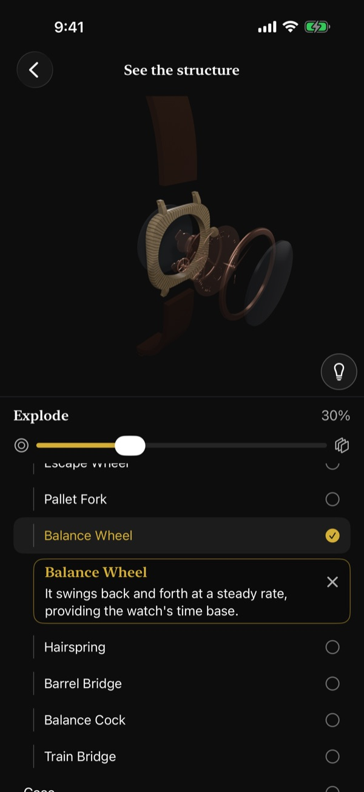
- Move the "Explode" slider to the right to separate the watch into layers. The amount is shown at the top right of the slider. You feel a light haptic as the layers come apart or come back together. When the watch is widely separated, the view turns to the back.
- "Assemble" puts the watch back together.
- Turn on "Skeleton" to make the exterior see-through and reveal the movement.
- The "Layers" list shows the parts and the main movement components in stacking order from the top (crystal side). Movement components are indented. Tap a row to highlight that component in 3D and show a card with its name and role below the row.
- You can also tap a component on the 3D watch. Tap it again, or tap the × button on the card ("Deselect"), to remove the highlight.
4. iPhone: See it in motion
Open it with "See it in motion" on the home screen or under "…" in the toolbar of "Parts". It starts with a close view of the back, near the balance. The 3D watch is at the top and the controls are below it.
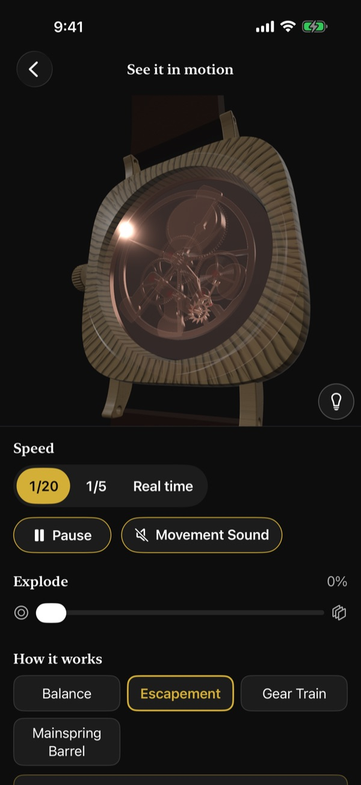
- "Speed": choose "1/20", "1/5", or "Real time". Slower speeds make the balance and escapement easier to follow.
- Tap "Pause" to stop and "Resume" to continue.
- Turn on the "Movement Sound" button (to the right of "Pause") to hear ticking at the beat rate, in step with the motion. It starts off each time you open the screen, and stops when the app goes to the background. If sound is turned off in the app's Settings, you see "Sound is turned off in Settings".
- Use the "Explode" slider to take the watch apart while it runs.
- "How it works": choose "Balance", "Escapement", "Gear Train", "Mainspring Barrel", or "Rotor" (automatic only) to highlight it in 3D and read, below the buttons, what it does and which components it's made of. Tap it again to remove the highlight.
If the case back isn't see-through, the exterior is made see-through so you can see the movement. The rotor is shown faded so it doesn't hide the balance.
5. iPhone: Lighting
Tap the light bulb button ("Lighting") at the bottom right of the 3D watch to open the lighting panel at the bottom of the screen. It's available on the home screen, "Parts", "Details", "See the structure", and "See it in motion".
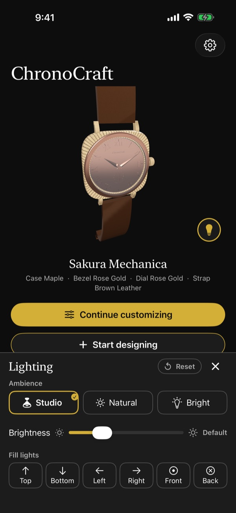
- "Ambience": choose "Studio", "Natural", or "Bright". "Bright" helps you see the details of black parts.
- "Brightness": change the overall brightness with the slider. The value shows "Default" or a percentage of the default.
- "Fill lights": turn each of the six lights ("Top", "Bottom", "Left", "Right", "Front", "Back") on or off. Fill lights are fixed to the screen, so "Top" always lights the watch from the top of the screen even when you rotate it.
- "Reset" returns to the original lighting. Close the panel with the × button ("Close") or the "Lighting" button.
When the lighting differs from the default, the "Lighting" button shows a gold dot. Your lighting stays the same across screens and after you reopen the app. Lighting isn't part of your design, so shared images, thumbnails, and Apple Watch don't change.
6. iPhone: My Designs
Open it with "My Designs" on the home screen or under "…" in the toolbar of "Parts".
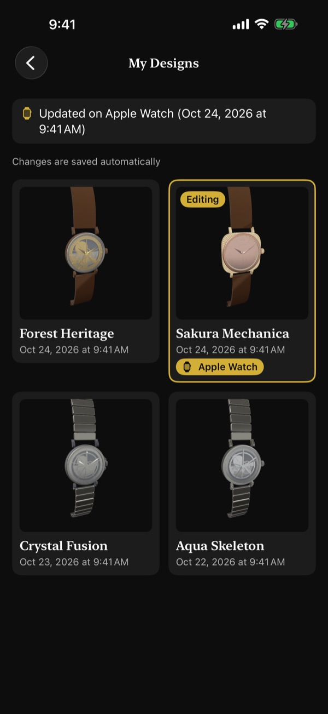
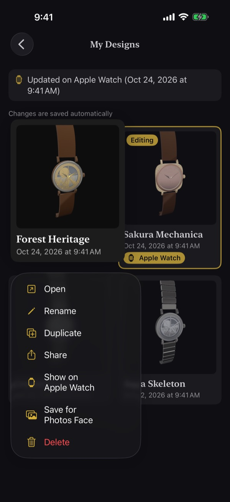
Saving
There's no save button (the list also says "Changes are saved automatically"). When you tap "Start designing" or start from an example, the design is added to My Designs, and every change is saved automatically. The list is a two-column grid with the newest designs first; each design shows its name and date below the thumbnail. The design you're editing has a gold border and "Editing". Tap a design to open it and return to the previous screen.
Menu (touch and hold)
Touch and hold a design in the list to open the menu in Figure 11 and choose "Open", "Rename", "Duplicate", "Share", "Show on Apple Watch", "Save for Photos Face", or "Delete".
- "Rename": names can be up to 40 characters. Tap "Done" to confirm. If you confirm an empty name, the name doesn't change.
- "Duplicate": a copy is added at the top of the list and becomes the design you're editing.
- "Share": creates an image of the design. When it's ready, the share sheet opens (tap "Share" to open it again).
- "Delete": choose "Delete" when asked "Delete “name”?" and the design disappears from the list. "Deleted “name”" and "Undo" appear at the bottom for a few seconds; tap "Undo" to bring it back. The deletion becomes final when you leave the list.
Designs made with a newer version of the app, or with damaged data, show "Can't be opened. Update the app to open it" or "Can't be loaded because the data is damaged" and can't be opened.
iCloud sync
- When your device is signed in to iCloud and iCloud is enabled for ChronoCraft, adding, changing, renaming, and deleting designs sync automatically between devices that use the same Apple Account.
- There's no sync switch in the app; it follows the iCloud settings in the Settings app.
- When iCloud isn't in use, the list shows "Saved only on this iPhone". Everything still works on the device.
- Changes made offline sync when you're back online.
- Lighting, the sound and haptics settings, and the design chosen for Apple Watch don't sync; they stay on that iPhone.
7. Showing a design on Apple Watch
How to send a design
- Install ChronoCraft on your Apple Watch.
- In My Designs, touch and hold a design and choose "Show on Apple Watch" from the menu (Figure 11). For the design you're editing, you can also use "Show on Apple Watch" on the home screen or under "…" in the toolbar of "Parts".
Apple Watch shows one design at a time. Choosing "Show on Apple Watch" for another design replaces it. The chosen design has a gold "Apple Watch" badge in the list ("Sakura Mechanica" in Figure 10). If you edit it afterward, the changes are sent to Apple Watch automatically. To stop, choose "Remove from Apple Watch"; Apple Watch goes back to showing the example design.
What the status means
While a design is chosen, its status appears with a watch icon at the top of the My Designs list (in Figure 10, "Updated on Apple Watch (Oct 24, 2026 at 9:41 AM)").
- "Waiting to update Apple Watch": the design is being sent, or Apple Watch hasn't received it yet.
- "Updated on Apple Watch (time)": the design was applied on Apple Watch at that time.
- "Couldn't send to Apple Watch. ChronoCraft will try again the next time it connects.": it is sent again automatically the next time the watch connects.
- "No Apple Watch is paired": no Apple Watch is paired with this iPhone.
- "Install ChronoCraft on your Apple Watch to show this design there": ChronoCraft isn't installed on the watch.
- "Update ChronoCraft on your Apple Watch": the Watch app is too old to show the design.
- "The selected design can't be shown on Apple Watch": the chosen design can no longer be loaded. Apple Watch keeps showing the last design it received.
How long it takes
When Apple Watch is near your iPhone, the design arrives within a few seconds to about 30 seconds while the Watch app is open or just after you close it. Otherwise, it appears the next time you open the Watch app (or when watchOS wakes the app in the background). If the watch wasn't connected, the latest state arrives the next time it connects.
8. Apple Watch: Controls
Open the Watch app to see your chosen design showing the current time. Until a design arrives, it shows the example design "Forest Heritage" with "Choose a design on your iPhone to make it yours". Designs you receive are kept on Apple Watch, so they show even when your iPhone isn't nearby.


- Tap for front and back: tap the watch to switch between the front (dial, Figure 12) and the back (case back, Figure 13), with a haptic. With a see-through case back, the balance, escapement, and gear train move at the beat rate. On the back, the time appears small at the bottom at the whole-watch size (the text at the bottom fades out as you zoom in). The app remembers the side you last viewed.
- Digital Crown to zoom: turn it to change smoothly from the whole watch ("Full watch", Figure 14) to the dial filling the screen ("Zoomed in", Figure 12). The first time you open the app, it's zoomed in. The app remembers the size and uses it the next time you open it or receive a new design.
- Touch and hold for the movement sound: hold the watch for about half a second to hear ticking, as if the watch were held to your ear, for as long as you hold it. It stops when you lift your finger, and the side doesn't flip. Choose the long-press action under "Apple Watch Long Press" in the iPhone app's Settings ("Movement Sound" or "None").
- Tilting your wrist: while your wrist is raised and the Watch app is showing, tilting moves the reflection on the crystal (or on a see-through case back). On automatic designs, the rotor swings like a weight when it's visible.
- Always On: when you lower your wrist, the screen dims, the seconds hand is hidden, and the movement, rotor, and reflections stop. The hour and minute hands update once a minute. Raise your wrist and the motion returns right away.
9. Apple Watch: On your watch face
Apps can't create Apple Watch faces themselves (a watchOS rule). Instead, there are two ways to put your ChronoCraft watch on a face you already use.
Complications
- Touch and hold the watch face on Apple Watch, then tap "Edit".
- Swipe to the complications screen, tap the slot you want, and choose ChronoCraft (Figure 15).
- Circular: a small analog watch of your chosen design.
- Rectangular: the dial with the hour and minute hands.

The hands move once a minute, with no seconds hand. When you change the design shown on Apple Watch, the complication changes too. Tap it to open the Watch app.
Photos face
- In My Designs, touch and hold a design and choose "Save for Photos Face" from the menu (Figure 11). For the design you're editing, you can also use "Save for Photos Face" on the home screen.
- The first time, you're asked for permission to add photos. After you allow it, the image is created and "Image for Photos Face" shows "Saved to Photos" (Figure 16). Close it with "Close" or the × at the top right.
- As the screen says, in the Watch app on your iPhone, go to Face Gallery → Photos, choose the saved image, and set it as your Photos face.
The image shows the dial from the front without hands (the Photos face draws the time on top), and the date window is left blank. It's sized for the screen of your paired Apple Watch. If ChronoCraft isn't allowed to add photos, you see "ChronoCraft isn't allowed to save to Photos"; use "Open Settings" to allow it.
10. Settings
Tap the gear button at the top right of the home screen to open "Settings".
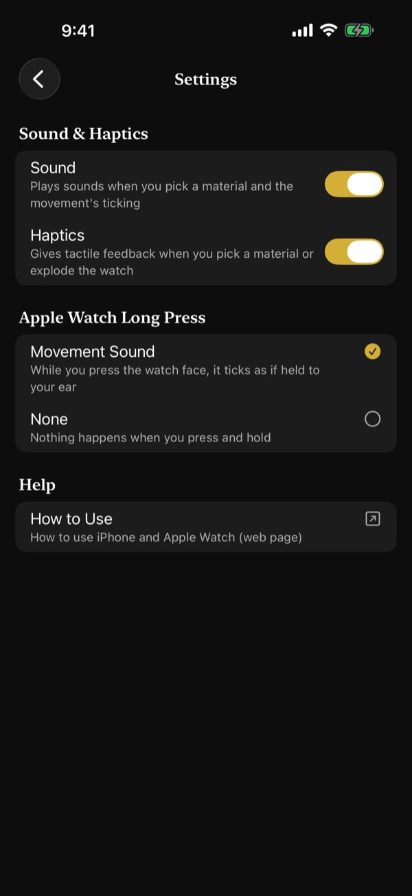
- "Sound & Haptics": turn "Sound" and "Haptics" on or off separately with the switches on the right. Turning one off stops all of this app's sounds (or haptics) on both iPhone and Apple Watch. Both are on at first.
- "Apple Watch Long Press": choose what happens when you touch and hold the watch: "Movement Sound" or "None". The selected one has a gold check mark.
- "How to Use" under "Help": opens this guide in your web browser.
Settings are sent to Apple Watch automatically and arrive with the same timing as designs. If no Apple Watch is paired, or ChronoCraft isn't installed on it, "Settings" tells you so.
How device settings apply
- No sounds play while iPhone or Apple Watch is in Silent Mode.
- No haptics play when system haptics are turned off in the device's settings.
- Sounds follow the device volume. On iPhone, they play on top of music from other apps without stopping it.
- On Apple Watch, when other audio such as music in your earphones is playing, the movement sound is replaced by a haptic tick once per second.
- If haptics on Apple Watch are hard to feel, set haptics to "Prominent" under Sounds & Haptics in the Settings app on Apple Watch.
11. Accessibility
VoiceOver
- On iPhone, the 3D watch offers the actions "Rotate Left", "Rotate Right", "Zoom In", "Zoom Out", and "Reset to Front".
- Each design in My Designs offers the actions "Open", "Rename", "Duplicate", "Share", "Show on Apple Watch", "Save for Photos Face", and "Delete". While VoiceOver is on, you have longer to undo a deletion (about 10 seconds).
- Banners at the top of the screen (such as why a choice is unavailable) don't disappear on their own while VoiceOver is on.
- On Apple Watch, VoiceOver reads the design's name, whether the front or back is showing, and the current time. Use the "Show Back" and "Show Front" actions to flip it.
- Adjust the size of the watch on Apple Watch by swiping up or down (four steps from "Full watch" to "Zoomed in"). VoiceOver reads the current size as "Full watch", "Zoomed in", or "Between full and zoomed (percentage)".
- When sound is on in the app's Settings, the "Listen to Movement" action on Apple Watch plays the movement sound for 5 seconds.
Reduce Motion
- iPhone: the 3D watch doesn't turn by itself, and changes of view happen without animation.
- Apple Watch: reflections don't change, the rotor, balance, escapement, and gear train are shown still, and the front and back switch without a turning animation. The hands still show the current time, and the long-press movement sound still ticks at the beat rate.
Text size
Text grows with your device's text size setting. At large sizes, choices and lists are shown in a single column, and descriptions wrap so you can read them in full.
12. Need help?
See Support for frequently asked questions. For questions, bug reports, or feedback, contact info@kamkam.me.